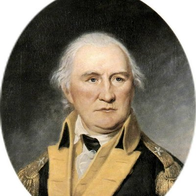
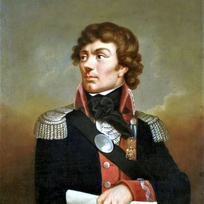

The battle that changed everything — and helped America win its freedom.
Scroll for fast facts
Quick Facts
📅
When
September – October 1777
📍
Where
Saratoga, New York
🏳️
Result
6,000 British soldiers surrendered
📖 The Story
How It All Happened
Follow the road to Saratoga — from the British plan to the final surrender.
⚡ The Big Picture
Britain wanted to cut the 13 colonies in half by taking control of the Hudson River Valley. If they could split New England from the rest of the colonies, the American Revolution might fall apart. Three British armies were supposed to meet in Albany, New York — but the plan didn't go as expected!
📅 July 1, 1777
🏰
Fort Ticonderoga Falls
British General John Burgoyne marched south from Canada with about 7,500 soldiers. His first big win was capturing Fort Ticonderoga — an important American fort. It seemed like the British plan was working perfectly. But the real challenges were just ahead.
📅 August 16, 1777
🌿
Battle of Bennington
American General Philip Schuyler made life very hard for Burgoyne's army. His soldiers chopped down trees and destroyed bridges, turning a short trip into a full month of slow marching. Then, at Bennington, Colonel John Stark's militia (local soldiers) destroyed about 1,000 of Burgoyne's men. Burgoyne's supplies were running dangerously low.
📅 September 19, 1777
⚔️
Battle of Freeman's Farm
Burgoyne split his army into three groups and pushed toward the American lines. For over three hours, fierce fighting raged in a clearing called Freeman's Farm. Daniel Morgan's expert riflemen (sharpshooters) picked off almost every British officer. Benedict Arnold led bold attacking moves. The British held the field but lost about 600 men — twice the American losses.
📅 Sept 20 – Oct 6, 1777
⏳
The Waiting Game
After Freeman's Farm, both sides dug in and waited. Burgoyne hoped for reinforcements from General Clinton in New York City — they never came close enough. Meanwhile, American forces grew from 9,000 to over 13,000 as militia joined from across the region. British soldiers were put on half rations (half their normal food). Inside the American camp, General Gates and Benedict Arnold had a huge fight, and Gates took away Arnold's command. That decision would have surprising consequences...
📅 October 7, 1777
🔥
Battle of Bemis Heights
Burgoyne made one last desperate move, sending 1,500 troops to probe the American lines. Morgan's sharpshooters fatally shot the respected British general Simon Fraser. Then something amazing happened — Benedict Arnold, with no official command, charged onto the battlefield on horseback! He led a furious attack that broke through the Breymann Redoubt (a German defensive position). Arnold was shot in the leg, but the Americans won a decisive victory.
📅 October 17, 1777
🏳️
The Surrender
Burgoyne retreated north, but found himself surrounded by nearly 20,000 American soldiers. He had no choice. On October 17, 1777, he surrendered about 6,000 remaining troops under the Convention of Saratoga. In a moment of dramatic irony, he wore his finest scarlet uniform with gold braid — the very outfit he had planned to wear marching triumphantly into Albany as a conqueror. America had won the turning point of the Revolution!
👤 The People
Key Figures at Saratoga
Meet the commanders, heroes, and key players who shaped the outcome of the battles.
🇬🇧 British
Gen. John Burgoyne
British Commander
Burgoyne led about 7,500 soldiers south from Canada in 1777. He had a bold plan to split the American colonies in two. But American resistance, dwindling supplies, and no help from the other British armies led to his downfall. He surrendered his entire remaining army at Saratoga — one of the most shocking defeats in British military history.
Burgoyne was nicknamed "Gentleman Johnny" because he loved fancy parties and the theater!
🇺🇸 American
Gen. Horatio Gates
American Commander
General Gates commanded the American forces at Saratoga. He was a careful, defensive strategist who preferred to let the British tire themselves out. His approach worked well — he kept his army strong while Burgoyne's grew weaker. After the American victory, he became one of the most celebrated generals in the Revolution, though his argument with Arnold remains controversial.
Gates was actually born in England but chose to fight for American freedom!
🇺🇸 American
Benedict Arnold
Field Commander (Hero & Traitor)
Arnold was one of the bravest and most effective American commanders at Saratoga. He led bold attacks at Freeman's Farm and charged the battlefield at Bemis Heights even after being stripped of his command — getting shot in the leg in the process. Sadly, he later became America's most infamous traitor by switching sides to the British.
Benedict Arnold was once considered the greatest hero of the Revolution before he switched sides!

🇺🇸 American
Col. Daniel Morgan
Commander of Virginia Riflemen
Daniel Morgan led a special unit of Virginia riflemen — expert sharpshooters who could hit targets from incredible distances. His men were famous for aiming at British officers during battle, which disrupted British attacks and caused confusion in their ranks. At Bemis Heights, Morgan's riflemen fatally shot the respected British general Simon Fraser.
Before the war, Morgan was a tough frontier wagon driver who survived being shot through the neck!

🇺🇸 American
Tadeusz Kościuszko
Military Engineer
Kościuszko (koh-SHOOS-koh) was a brilliant military engineer from Poland who came to America to help fight for freedom. He designed the powerful fortifications on Bemis Heights that gave the Americans such a strong defensive position. His clever use of the landscape forced Burgoyne into desperate attacks that cost the British dearly.
Kościuszko loved freedom so much, he traveled across the ocean from Poland to help America fight for it!
🇬🇧 British
Gen. Simon Fraser
British Brigadier General
Simon Fraser was one of the most respected and skilled generals in Burgoyne's army. He was a brave leader who always led from the front. On October 7, 1777, during the Battle of Bemis Heights, he was fatally shot by one of Daniel Morgan's expert riflemen. His loss was a huge blow to British morale during the battle.
Fraser was so respected that even the Americans honored him with a proper burial after the battle.
⚔️ The Battles
Battle Breakdowns
Explore both battles with maps, troop movements, and key statistics.
Battle Map — Freeman's Farm
American
British
⚔️ Freeman's Farm — September 19, 1777
Date
Sept 19, 1777
Duration
3+ Hours
British Casualties
~600
American Casualties
~300
What Happened
Burgoyne split his army into three columns to probe American defenses and look for weak spots.
Fighting lasted over three hours in a clearing around Freeman's Farm — one of the longest land battles of the entire Revolution.
Daniel Morgan's expert riflemen picked off almost every officer in the British advance, causing chaos in their ranks.
Benedict Arnold led bold flanking (side-attack) maneuvers that pushed the British back again and again.
The British held the field at the end, but their losses were twice those of the Americans — a sign of battles to come.
Battle Map — Bemis Heights
American
British
German
🔥 Bemis Heights — October 7, 1777
Date
Oct 7, 1777
British Troops
1,500 sent
British Casualties
~1,135
American Casualties
~330
What Happened
Burgoyne, running out of supplies and desperate for a breakthrough, sent 1,500 soldiers to attack the American left flank (side).
Morgan's sharpshooters spotted the respected British commander General Simon Fraser rallying his troops — and fatally shot him, breaking British morale.
Benedict Arnold, who had been stripped of his command by Gates, rode onto the battlefield anyway — shouting and rallying soldiers with no official authority.
Arnold led a furious charge that broke through the Breymann Redoubt — the key German defensive position. He was shot in the leg during the attack.
The British suffered more than three times the American casualties. This defeat made surrender inevitable — Burgoyne had no path forward.
📊 Comparing the Two Battles
Category
⚔️ Freeman's Farm Sept 19, 1777
🔥 Bemis Heights Oct 7, 1777
British Troops
~7,500 total (all 3 columns)
1,500 sent on attack
American Troops
~9,000 (growing)
13,000+ (well supplied)
British Casualties
~600
~1,135
American Casualties
~300
~330
Field Control
British (costly win)
Americans (decisive)
Key Figure
Benedict Arnold (flanking)
Arnold + Morgan (assault)
Notable Death
Many British officers
General Simon Fraser
Battle Duration
3+ hours
Shorter, but decisive
British Morale After
Damaged
Broken — led to surrender
Outcome
Tactical British win, strategic loss
Clear American victory
💡 Key Takeaway: Freeman's Farm showed that the Americans could fight the British to a standstill. Bemis Heights proved they could beat them decisively. Together, these two battles forced Burgoyne's surrender and changed the course of the war.
🌟 Why Saratoga Changed History
🇫🇷
France Joined the Fight — The victory convinced France to formally ally with America on February 6, 1778. France brought soldiers, money, weapons, and crucial naval power.
💪
Proved Americans Could Win — Saratoga showed the world that a citizen army could defeat a professional European military force.
🗺️
Ended the British Plan — The British strategy to split New England from the other colonies was permanently stopped.
🔥
Boosted Patriot Morale — News of the victory lifted spirits across all 13 colonies and gave Americans renewed hope and energy.
🏆
Led to Final Victory — French support from the alliance helped Americans win the final battle at Yorktown in 1781, securing American independence.
🏆 Quiz & Fun Zone
Test Your Knowledge!
Take the quiz, arrange the timeline, and flip through fun facts!
Question 1 of 10Score: 0 / 10
Question 1 of 10
Loading...
🏅
Saratoga Scholar!
10 / 10
Outstanding work, historian!
Challenge: Drag the events from the scrambled list on the left and drop them into the correct order on the right! On mobile, tap and hold to drag.
🔀 Scrambled Events
📋 Correct Order (1 → 6)
Click or tap any card to flip it and reveal the surprising answer!
ℹ️ About This Project
Bull Run Middle School Project
Developed by
Aaron Le and Luca Brooks
This interactive web app was created as a school project to teach students about the Battles of Saratoga during the American Revolutionary War. All historical facts have been carefully researched and verified.
Portrait images are public domain works sourced from Wikimedia Commons.